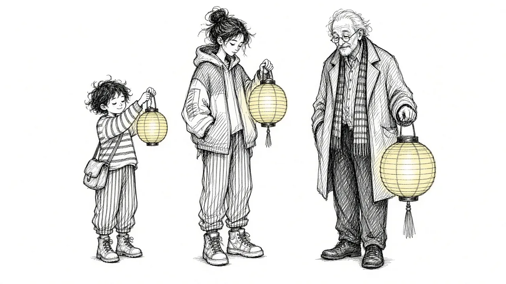

Grief Across the Lifespan: How Children, Teens, and Adults Grieve

Grief does not look the same at every age. A five-year-old might ask the same question about death a dozen times and then run off to play. A teenager might seem fine at home and fall apart with friends. An adult might hold it together at work and break down in the car. An older adult might grieve not only one person but a whole generation of peers.
Understanding how grief tends to show up at different stages of life can help you support others, and yourself. This guide walks through grief in children, teens, adults, and older adults, along with what tends to help at each stage.
Young children
How young children understand death
Very young children do not yet fully understand that death is permanent and universal. A toddler or preschooler may believe the person will come back, or that death is like sleep or going away. They might ask repeatedly when the person is returning.
Between roughly ages five and nine, many children start to understand that death is permanent, though they may still believe it only happens to some people. They may also engage in magical thinking, wondering if something they did or thought caused the death.
How young children grieve
Young children often grieve in short bursts. They may be sad one moment and playing the next. This is normal and healthy. It is how children take in something too big to process all at once.
Other common signs include:
- Regression, such as bedwetting or baby talk
- Clinginess or fear of separation
- Changes in sleep or appetite
- Acting out the death in play
- Repeated questions
What helps young children
- Use clear, simple words like "died" rather than "went to sleep" or "we lost him."
- Answer questions honestly, even if they are asked many times.
- Reassure them that they did not cause the death.
- Keep routines as steady as possible.
- Invite them to remember through drawings, stories, or a memory box.
Older children and preteens
Children around ages nine to twelve usually understand that death is permanent and will happen to everyone. This can bring new fears about their own safety or the safety of others they love.
They may want facts and details. They may feel embarrassed about being different from their friends. Some become very helpful or responsible, trying to take care of others.
What helps:
- Offer age-appropriate facts and answer questions directly
- Give them choices about participating in rituals like funerals
- Let teachers know so school can offer support
- Watch for worry about the safety of other family members
Teenagers
How teens grieve
Teens understand death much as adults do, but they are also in the middle of figuring out who they are. Grief can collide with that process in complicated ways.
Teens may:
- Turn to friends rather than family for support
- Hide their grief to seem strong or fit in
- Feel intense anger or act out
- Withdraw into their room or online life
- Take on adult responsibilities after a death
- Engage in risky behavior
Some teens worry that showing grief will burden their parents, especially if the parent is also grieving.
What helps teens
- Make yourself available without forcing conversation. Car rides and shared activities often open doors.
- Respect their need for privacy, while staying alert to warning signs.
- Let them grieve in their own style, which may include art, music, sports, or online communities.
- Watch for signs of depression, substance use, or self-harm.
- Consider peer grief groups, which can help teens feel less alone.
Teens often grieve sideways. They may not talk to you directly, but they are watching how you grieve.
Adults
Adults often juggle grief with work, parenting, caregiving, finances, and household responsibilities. Many feel they cannot afford to fall apart, so they push grief aside until later.
Adult grief may include:
- Pressure to return to normal quickly
- Secondary losses, such as income, roles, or a home
- Supporting children or aging parents while grieving
- Identity changes, especially after losing a partner or parent
What helps adults:
- Asking for practical help with meals, childcare, or errands
- Talking openly with employers about needs, if possible
- Setting aside time to grieve rather than waiting for it to pass
- Finding support groups or counseling when needed
Our guide on Losing a Partner explores one of the most common adult losses in depth.
Older adults
Older adults may face multiple losses close together: partners, siblings, friends, and peers. They may also be grieving changes in health, independence, or home. Each loss can stack on top of the last. See Multiple Losses at Once.
Older adults may also grieve in quieter ways, especially if they grew up in times when grief was expected to be private.
What helps:
- Regular contact from family and friends, especially after the funeral
- Help with practical tasks that the person who died used to handle
- Opportunities to tell stories and share memories
- Watching for isolation, which can deepen grief and affect health
Grieving together across generations
Families often grieve together across many ages at once. A grandparent, parent, and child may all be grieving the same person in very different ways. That can lead to misunderstandings. A child playing happily might seem uncaring to an adult. A teen's anger might seem disrespectful.
It can help to remember that everyone grieves according to their age, personality, and relationship with the person. Rituals that include everyone, like planting a tree, cooking a favorite meal, or making a shared memory book, can bring different generations together. Our guide to grief rituals has more ideas.
When grief returns as children grow
Children often revisit a loss as they grow. A child who lost a parent at four may grieve again at ten, then at sixteen, then at their own wedding, each time understanding the loss in a new way. This is not a sign that the earlier grief was handled badly. It is a natural part of growing up with a loss.
When to seek more help
At any age, consider extra support if grief:
- Makes it hard to function at school, work, or home for a long time
- Comes with signs of depression or anxiety that do not ease
- Leads to substance use or risky behavior
- Involves talk of wanting to die or self-harm
If you or a child or teen in your life is having thoughts of suicide, call or text 988 right away. The Suicide and Crisis Lifeline is available any time, for any age.
Grief at every age
Grief is part of life at every stage. It changes as we grow, and it shapes us in different ways depending on when it arrives. Whatever your age, or the age of the person you are supporting, the most important things are often the same: honesty, patience, steady connection, and room to grieve in your own way.
This article is for general information and support. It is not medical or mental health advice. If grief has become unbearable or you are thinking about harming yourself, call or text 988 right now.
Related reading

Grief Alongside Depression and Anxiety
Grief often arrives alongside other mental health challenges. How to recognize overlap and get support for all of it.

Why Your Brain Keeps Replaying Their Last Days
Memories of the final days or moments can loop relentlessly. Here is why that happens and how to let the rest of their life back in.

Rumination in Grief: Getting Off the "What If" Wheel
Endless what-ifs and if-onlys can trap grieving people. Learn why rumination happens and gentle ways to step off the wheel.